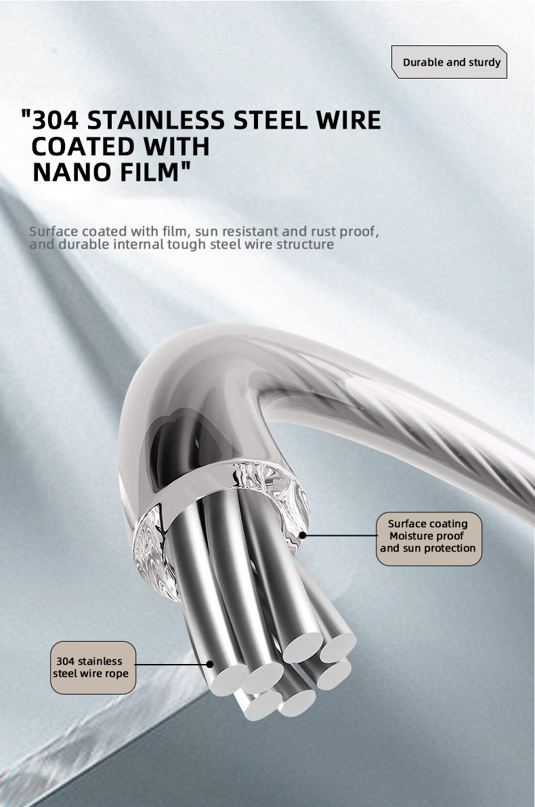
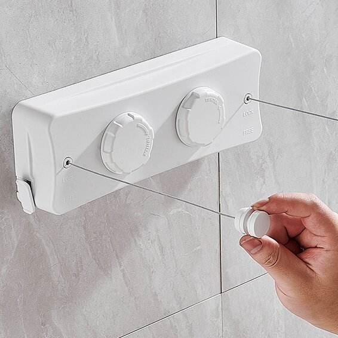

More reach.
More room to dry.
The ARVIQUE 5.2M Double Rope Retractable Clothesline in White brings extended drying reach to a compact wall-mounted format, giving you two independently usable lines without permanent floor clutter.

Extended reach. Compact footprint.
A longer double-line system for homes that need more usable drying distance while keeping floors and walkways clear.
5.2 Meter Reach
Extended line length provides more usable drying distance for everyday laundry.
Double Rope
Two retractable lines increase usable drying capacity from one compact wall-mounted housing.
Independent Control
Separate lock/free controls allow each rope to be extended and managed independently.
Space Saving
Retract the lines after use so the surrounding area returns to a clean, uncluttered space.
Durable wire. Thoughtful mechanism.
The product combines retractable operation with stainless-steel wire construction for practical everyday drying.

304 Stainless Steel Wire
Stainless steel wire construction with a protective surface coating, designed for durable everyday use.

Pull. Lock. Retract.
Extend the line when needed, secure it for use, and retract it neatly after drying is complete.
Built for extended drying space.
A white double-rope retractable system designed for wall-mounted use in balconies, bathrooms, utility areas and other suitable drying spaces.
Need help with your product?
For installation, product guidance or warranty assistance, contact ARVIQUE Care and we’ll help you get the best from your clothesline.
More reach. Less clutter.
Upgrade your drying space with the ARVIQUE 5.2M Double Rope Retractable Clothesline in White.
Buy on Amazon — ₹2,999